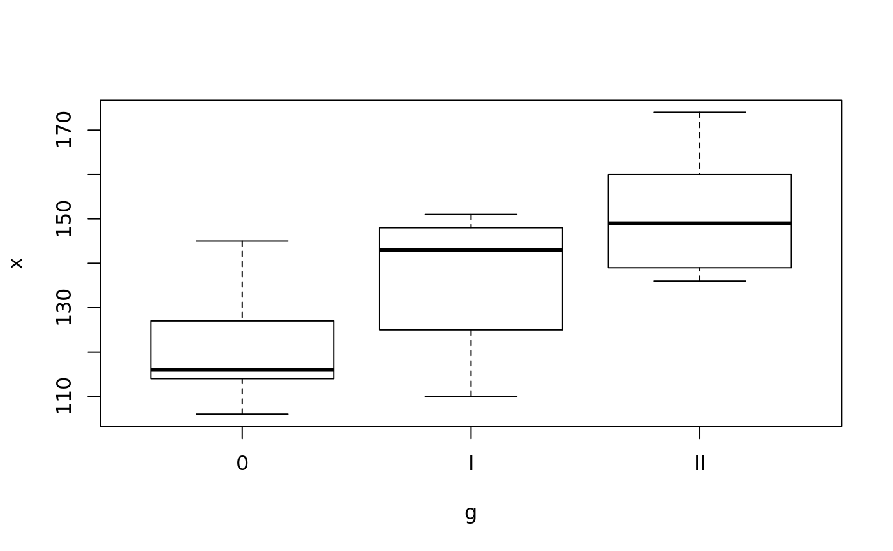
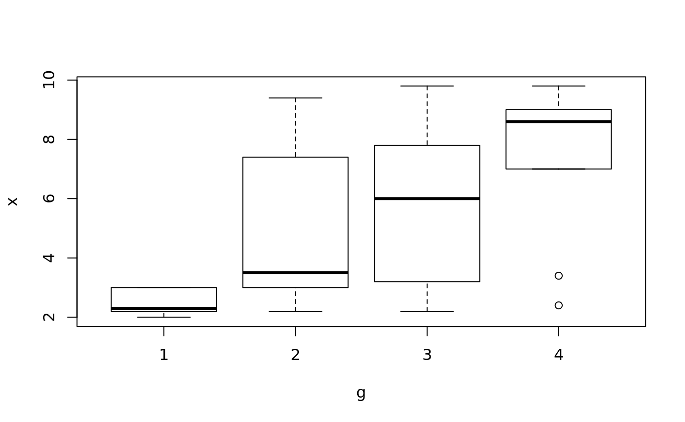
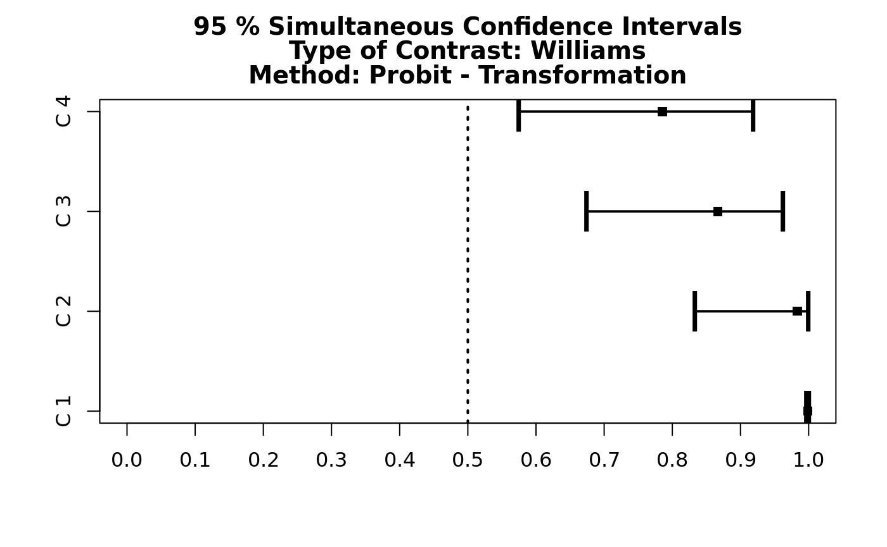
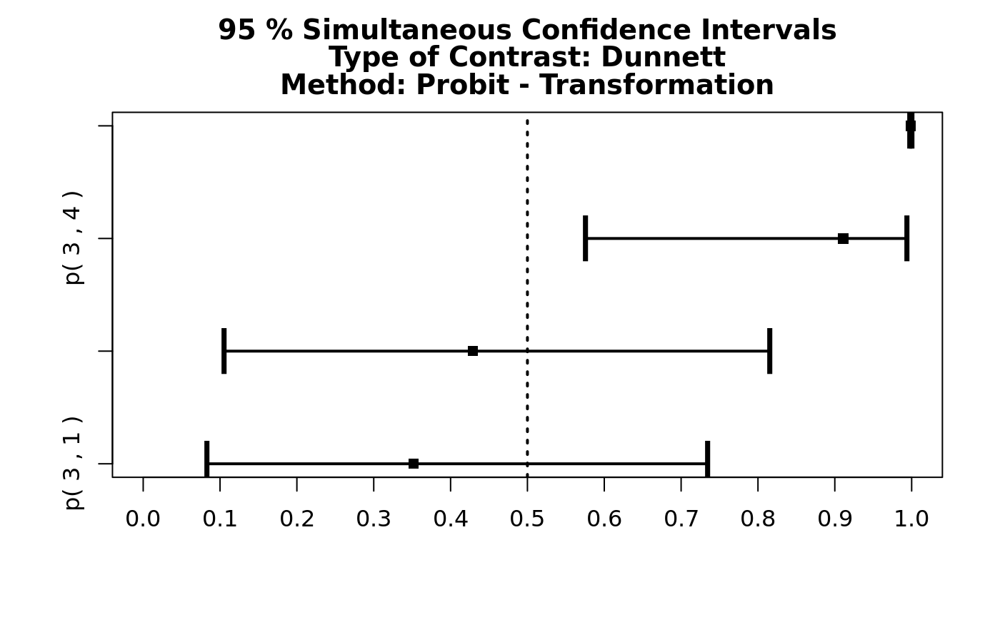
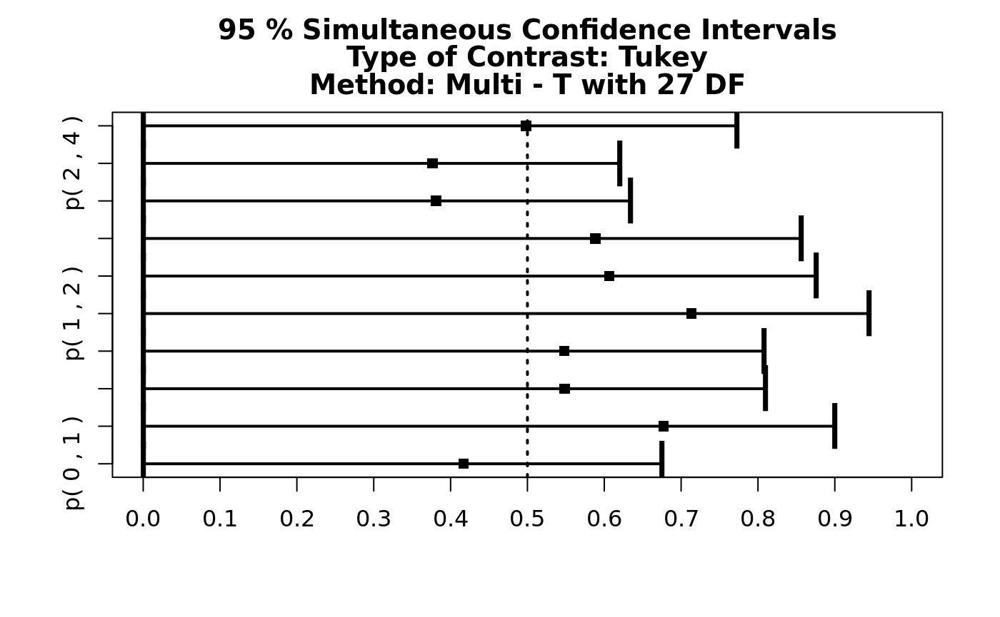
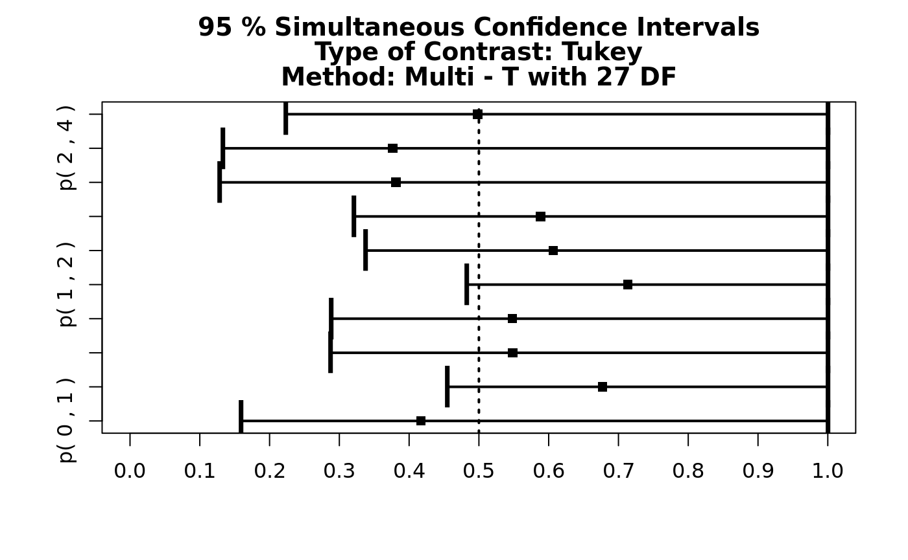
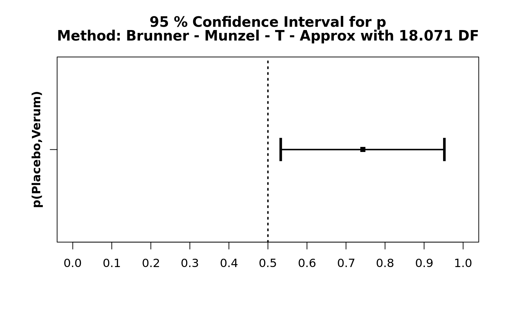
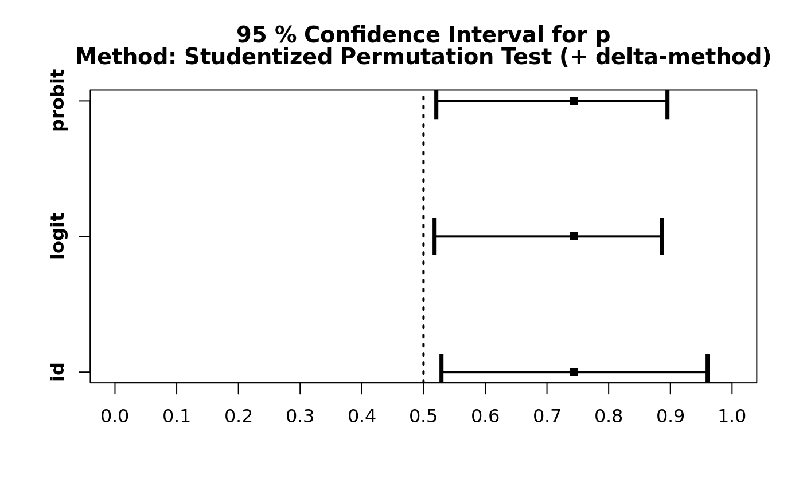
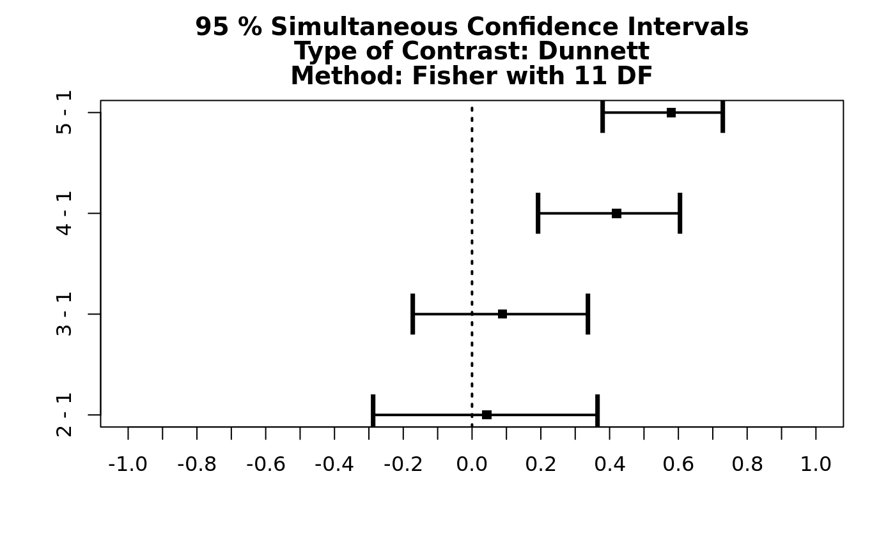

MCP-Test-Power-and-Appropriateness.Rmdlibrary(ECxHelper)
#> Loading required package: drc
#> Loading required package: MASS
#>
#> 'drc' has been loaded.
#> Please cite R and 'drc' if used for a publication,
#> for references type 'citation()' and 'citation('drc')'.
#>
#> Attaching package: 'drc'
#> The following objects are masked from 'package:stats':
#>
#> gaussian, getInitiallibrary(PMCMRplus)
#>
#> Attaching package: 'PMCMRplus'
#> The following object is masked from 'package:drc':
#>
#> algae
## Example from Sachs (1997, p. 402)
x <- c(106, 114, 116, 127, 145,
110, 125, 143, 148, 151,
136, 139, 149, 160, 174)
g <- gl(3,5)
levels(g) <- c("0", "I", "II")
## Williams Test
williamsTest(x ~ g)
#>
#> Williams trend test
#>
#> data: x by g
#> alternative hypothesis: greater
#>
#> H0
#> t'-value df t'-crit decision alpha
#> mu1 - ctr <= 0 1.357 12 1.782 accept 0.05
#> mu2 - ctr <= 0 2.950 12 1.873 reject 0.05
#> ---
plot(x~g)
## Example from Shirley (1977)
## Reaction times of mice to stimuli to their tails.
x <- c(2.4, 3, 3, 2.2, 2.2, 2.2, 2.2, 2.8, 2, 3,
2.8, 2.2, 3.8, 9.4, 8.4, 3, 3.2, 4.4, 3.2, 7.4, 9.8, 3.2, 5.8,
7.8, 2.6, 2.2, 6.2, 9.4, 7.8, 3.4, 7, 9.8, 9.4, 8.8, 8.8, 3.4,
9, 8.4, 2.4, 7.8)
g <- gl(4, 10)
plot(x~g)
## Shirley's test
## one-sided test using look-up table
shirleyWilliamsTest(x ~ g, alternative = "greater")
#>
#> Shirley-Williams test
#>
#> data: x by g
#> alternative hypothesis: greater
#>
#> H0
#> t'-value df t'-crit decision alpha
#> mu1 - ctr <= 0 2.908 Inf 1.645 reject 0.05
#> mu2 - ctr <= 0 3.219 Inf 1.716 reject 0.05
#> mu3 - ctr <= 0 4.057 Inf 1.739 reject 0.05
#> ---
## Chacko's global hypothesis test for 'greater'
chackoTest(x , g)
#>
#> Chacko's test
#>
#> data: x and g
#> H = 17.505, df = 3, p-value = 0.0005563
#> alternative hypothesis: greater
## post-hoc test, default is standard normal distribution (NPT'-test)
summary(chaAllPairsNashimotoTest(x, g, p.adjust.method = "none"))
#>
#> Pairwise comparisons using Pairwise comparisons using Nashimoto-Wright's NPT'-Test
#> data: x and g
#> alternative hypothesis: greater
#> P value adjustment method: none
#> H0
#> z value Pr(>z)
#> 2 - 1 <= 0 2.381 0.0086247 **
#> 3 - 1 <= 0 2.946 0.0016116 **
#> 4 - 1 <= 0 4.045 2.6114e-05 ***
#> 3 - 2 <= 0 0.564 0.2862902
#> 4 - 2 <= 0 1.664 0.0480487 *
#> 4 - 3 <= 0 1.100 0.1357053
#> ---
#> Signif. codes: 0 '***' 0.001 '**' 0.01 '*' 0.05 '.' 0.1 ' ' 1
## same but h-distribution (NPY'-test)
chaAllPairsNashimotoTest(x, g, dist = "h")
#>
#> Pairwise comparisons using Nashimoto-Wright's NPY'-Test
#>
#> data: x and g
#> alternative hypothesis: greater
#>
#> H0
#> h-value k df h-crit decision alpha
#> 2 - 1 <= 0 3.368 3 Inf 2.943 reject 0.05
#> 3 - 1 <= 0 4.166 3 Inf 2.943 reject 0.05
#> 4 - 1 <= 0 5.721 3 Inf 2.943 reject 0.05
#> 3 - 2 <= 0 0.798 3 Inf 2.943 accept 0.05
#> 4 - 2 <= 0 2.353 3 Inf 2.943 accept 0.05
#> 4 - 3 <= 0 1.555 3 Inf 2.943 accept 0.05
#> ---
## NPM-test
NPMTest(x, g)
#>
#> Pairwise comparisons using Nashimoto-Wright's NPM-Test
#>
#> data: x and g
#> alternative hypothesis: greater
#>
#> H0
#> h-value k df h-crit decision alpha
#> 2 - 1 <= 0 3.368 4 Inf 3.295 reject 0.05
#> 3 - 1 <= 0 4.166 4 Inf 3.295 reject 0.05
#> 4 - 1 <= 0 5.721 4 Inf 3.295 reject 0.05
#> 3 - 2 <= 0 0.798 4 Inf 3.295 accept 0.05
#> 4 - 2 <= 0 2.353 4 Inf 3.295 accept 0.05
#> 4 - 3 <= 0 1.555 4 Inf 3.295 accept 0.05
#> ---
## Hayter-Stone test
hayterStoneTest(x, g)
#>
#> Hayter-Stone Test
#>
#> data: x and g
#> alternative hypothesis: greater
#>
#> H0
#> h-value k df h-crit decision alpha
#> Med(xi) - Med(xj) <= 0 4.811 4 Inf 3.295 reject 0.05
#> ---
## all-pairs comparisons
hsAllPairsTest(x, g)
#>
#> Pairwise comparisons using Hayter-Stone's all-pairs test
#>
#> data: x and g
#> alternative hypothesis: greater
#>
#> H0
#> h-value k df h-crit decision alpha
#> 2 - 1 <= 0 3.635 4 Inf 3.295 reject 0.05
#> 3 - 1 <= 0 3.955 4 Inf 3.295 reject 0.05
#> 4 - 1 <= 0 4.811 4 Inf 3.295 reject 0.05
#> 3 - 2 <= 0 0.855 4 Inf 3.295 accept 0.05
#> 4 - 2 <= 0 2.673 4 Inf 3.295 accept 0.05
#> 4 - 3 <= 0 1.604 4 Inf 3.295 accept 0.05
#> ---The function nparcomp computes the estimator of nonparametric relative contrast effects, simultaneous confidence intervals for the effects and simultaneous p-values based on special contrasts like “Tukey”, “Dunnett”, “Sequen”, “Williams”, “Changepoint”, “AVE”, “McDermott”, “Marcus”, “UmbrellaWilliams”, “UserDefined”. The statistics are computed using multivariate normal distribution, multivariate Satterthwaite t-Approximation and multivariate transformations (Probit and Logit transformation function). The function ‘nparcomp’ also computes one-sided and two-sided confidence intervals and p-values. The confidence intervals can be plotted.
library(nparcomp)
#> Loading required package: multcomp
#> Loading required package: mvtnorm
#> Loading required package: survival
#> Loading required package: TH.data
#>
#> Attaching package: 'TH.data'
#> The following object is masked from 'package:MASS':
#>
#> geyser
data(liver)
# Williams Contrast
a<-nparcomp(weight ~dosage, data=liver, asy.method = "probit",
type = "Williams", alternative = "two.sided",
plot.simci = TRUE, info = FALSE,correlation=TRUE)
summary(a)
#>
#> #------------Nonparametric Multiple Comparisons for relative contrast effects----------#
#>
#> - Alternative Hypothesis: True relative contrast effect p is not equal to 1/2
#> - Estimation Method: Global Pseudo ranks
#> - Type of Contrast : Williams
#> - Confidence Level: 95 %
#> - Method = Probit - Transformation
#>
#> - Estimation Method: Pairwise rankings
#>
#> #---------------------------Interpretation--------------------------------------------#
#> p(a,b) > 1/2 : b tends to be larger than a
#> #-------------------------------------------------------------------------------------#
#>
#> #----Data Info-------------------------------------------------------------------------#
#> Sample Size
#> 1 1 8
#> 2 2 7
#> 3 3 8
#> 4 4 7
#> 5 5 8
#>
#> #----Contrast--------------------------------------------------------------------------#
#> 1 2 3 4 5
#> C 1 -1 0.0000000 0.0000000 0.0000000 1.0000000
#> C 2 -1 0.0000000 0.0000000 0.4666667 0.5333333
#> C 3 -1 0.0000000 0.3478261 0.3043478 0.3478261
#> C 4 -1 0.2333333 0.2666667 0.2333333 0.2666667
#>
#> #----Analysis--------------------------------------------------------------------------#
#> Comparison Estimator Lower Upper Statistic p.Value
#> 1 C 1 0.999 0.997 1.000 20.283256 0.000000e+00
#> 2 C 2 0.983 0.833 0.999 4.427742 2.751753e-05
#> 3 C 3 0.867 0.674 0.962 4.060686 1.415022e-04
#> 4 C 4 0.785 0.574 0.918 3.164576 5.166672e-03
#>
#> #----Overall---------------------------------------------------------------------------#
#> Quantile p.Value
#> 1 2.415059 0
#>
#> #----Covariance------------------------------------------------------------------------#
#> [,1] [,2] [,3] [,4]
#> [1,] 1.000000e-05 5.333333e-06 3.478261e-06 2.666667e-06
#> [2,] 5.333333e-06 1.508221e-02 2.630879e-02 2.808674e-02
#> [3,] 3.478261e-06 2.630879e-02 1.317230e-01 1.460413e-01
#> [4,] 2.666667e-06 2.808674e-02 1.460413e-01 2.020406e-01
#>
#> #----Correlation-----------------------------------------------------------------------#
#> [,1] [,2] [,3] [,4]
#> [1,] 1.000000000 0.01373303 0.00303062 0.001876071
#> [2,] 0.013733026 1.00000000 0.59025228 0.508802779
#> [3,] 0.003030620 0.59025228 1.00000000 0.895211366
#> [4,] 0.001876071 0.50880278 0.89521137 1.000000000
#>
#> #--------------------------------------------------------------------------------------# # Dunnett dose 3 is baseline
c<-nparcomp(weight ~dosage, data=liver, asy.method = "probit",
type = "Dunnett", control = "3",
alternative = "two.sided", info = FALSE)
summary(c)
#>
#> #------------Nonparametric Multiple Comparisons for relative contrast effects----------#
#>
#> - Alternative Hypothesis: True relative contrast effect p is not equal to 1/2
#> - Estimation Method: Global Pseudo ranks
#> - Type of Contrast : Dunnett
#> - Confidence Level: 95 %
#> - Method = Probit - Transformation
#>
#> - Estimation Method: Pairwise rankings
#>
#> #---------------------------Interpretation--------------------------------------------#
#> p(a,b) > 1/2 : b tends to be larger than a
#> #-------------------------------------------------------------------------------------#
#>
#> #----Data Info-------------------------------------------------------------------------#
#> Sample Size
#> 1 1 8
#> 2 2 7
#> 3 3 8
#> 4 4 7
#> 5 5 8
#>
#> #----Contrast--------------------------------------------------------------------------#
#> 1 2 3 4 5
#> 1 - 3 1 0 -1 0 0
#> 2 - 3 0 1 -1 0 0
#> 4 - 3 0 0 -1 1 0
#> 5 - 3 0 0 -1 0 1
#>
#> #----Analysis--------------------------------------------------------------------------#
#> Comparison Estimator Lower Upper Statistic p.Value
#> 1 p( 3 , 1 ) 0.352 0.083 0.734 -0.9408612 0.80979086
#> 2 p( 3 , 2 ) 0.429 0.105 0.815 -0.4163321 0.98833862
#> 3 p( 3 , 4 ) 0.911 0.575 0.994 2.8931753 0.01506163
#> 4 p( 3 , 5 ) 0.999 0.997 1.000 20.2832555 0.00000000
#>
#> #----Overall---------------------------------------------------------------------------#
#> Quantile p.Value
#> 1 2.485814 0
#>
#> #--------------------------------------------------------------------------------------#
plot(c)
data(colu)
# Tukey comparison- one sided(lower)
a<-nparcomp(corpora~ dose, data=colu, asy.method = "mult.t",
type = "Tukey",alternative = "less",
plot.simci = TRUE, info = FALSE)
summary(a)
#>
#> #------------Nonparametric Multiple Comparisons for relative contrast effects----------#
#>
#> - Alternative Hypothesis: True relative contrast effect p is less than 1/2
#> - Estimation Method: Global Pseudo ranks
#> - Type of Contrast : Tukey
#> - Confidence Level: 95 %
#> - Method = Multi - T with 27 DF
#>
#> - Estimation Method: Pairwise rankings
#>
#> #---------------------------Interpretation--------------------------------------------#
#> p(a,b) > 1/2 : b tends to be larger than a
#> #-------------------------------------------------------------------------------------#
#>
#> #----Data Info-------------------------------------------------------------------------#
#> Sample Size
#> 1 0 22
#> 2 1 17
#> 3 2 20
#> 4 3 16
#> 5 4 17
#>
#> #----Contrast--------------------------------------------------------------------------#
#> 0 1 2 3 4
#> 1 - 0 -1 1 0 0 0
#> 2 - 0 -1 0 1 0 0
#> 3 - 0 -1 0 0 1 0
#> 4 - 0 -1 0 0 0 1
#> 2 - 1 0 -1 1 0 0
#> 3 - 1 0 -1 0 1 0
#> 4 - 1 0 -1 0 0 1
#> 3 - 2 0 0 -1 1 0
#> 4 - 2 0 0 -1 0 1
#> 4 - 3 0 0 0 -1 1
#>
#> #----Analysis--------------------------------------------------------------------------#
#> Comparison Estimator Lower Upper Statistic p.Value
#> 1 p( 0 , 1 ) 0.417 0 0.675 -0.85818164 9.018542e-08
#> 2 p( 0 , 2 ) 0.677 0 0.900 2.12260938 8.503239e-01
#> 3 p( 0 , 3 ) 0.548 0 0.809 0.49356240 8.103403e-02
#> 4 p( 0 , 4 ) 0.548 0 0.808 0.49507300 8.121390e-02
#> 5 p( 1 , 2 ) 0.713 0 0.944 2.46629587 9.231451e-01
#> 6 p( 1 , 3 ) 0.607 0 0.876 1.05628992 3.409910e-01
#> 7 p( 1 , 4 ) 0.588 0 0.856 0.87988269 2.434383e-01
#> 8 p( 2 , 3 ) 0.381 0 0.634 -1.25336796 5.834729e-11
#> 9 p( 2 , 4 ) 0.376 0 0.620 -1.35513213 1.050844e-12
#> 10 p( 3 , 4 ) 0.498 0 0.773 -0.01787249 4.087730e-03
#>
#> #----Overall---------------------------------------------------------------------------#
#> Quantile p.Value
#> 1 2.668281 1.050844e-12
#>
#> #--------------------------------------------------------------------------------------#
# Tukey comparison- one sided(greater)
b<-nparcomp(corpora~ dose, data=colu, asy.method = "mult.t",
type = "Tukey",alternative = "greater",
plot.simci = TRUE, info = FALSE)
summary(b)
#>
#> #------------Nonparametric Multiple Comparisons for relative contrast effects----------#
#>
#> - Alternative Hypothesis: True relative contrast effect p is greater than 1/2
#> - Estimation Method: Global Pseudo ranks
#> - Type of Contrast : Tukey
#> - Confidence Level: 95 %
#> - Method = Multi - T with 27 DF
#>
#> - Estimation Method: Pairwise rankings
#>
#> #---------------------------Interpretation--------------------------------------------#
#> p(a,b) > 1/2 : b tends to be larger than a
#> #-------------------------------------------------------------------------------------#
#>
#> #----Data Info-------------------------------------------------------------------------#
#> Sample Size
#> 1 0 22
#> 2 1 17
#> 3 2 20
#> 4 3 16
#> 5 4 17
#>
#> #----Contrast--------------------------------------------------------------------------#
#> 0 1 2 3 4
#> 1 - 0 -1 1 0 0 0
#> 2 - 0 -1 0 1 0 0
#> 3 - 0 -1 0 0 1 0
#> 4 - 0 -1 0 0 0 1
#> 2 - 1 0 -1 1 0 0
#> 3 - 1 0 -1 0 1 0
#> 4 - 1 0 -1 0 0 1
#> 3 - 2 0 0 -1 1 0
#> 4 - 2 0 0 -1 0 1
#> 4 - 3 0 0 0 -1 1
#>
#> #----Analysis--------------------------------------------------------------------------#
#> Comparison Estimator Lower Upper Statistic p.Value
#> 1 p( 0 , 1 ) 0.417 0.159 1 -0.85818164 0.99999994
#> 2 p( 0 , 2 ) 0.677 0.454 1 2.12260938 0.15093158
#> 3 p( 0 , 3 ) 0.548 0.287 1 0.49356240 0.91952563
#> 4 p( 0 , 4 ) 0.548 0.289 1 0.49507300 0.91878764
#> 5 p( 1 , 2 ) 0.713 0.482 1 2.46629587 0.07706831
#> 6 p( 1 , 3 ) 0.607 0.337 1 1.05628992 0.65949926
#> 7 p( 1 , 4 ) 0.588 0.321 1 0.87988269 0.75675277
#> 8 p( 2 , 3 ) 0.381 0.128 1 -1.25336796 1.00000000
#> 9 p( 2 , 4 ) 0.376 0.133 1 -1.35513213 1.00000000
#> 10 p( 3 , 4 ) 0.498 0.224 1 -0.01787249 0.99592707
#>
#> #----Overall---------------------------------------------------------------------------#
#> Quantile p.Value
#> 1 2.669853 0.07706831
#>
#> #--------------------------------------------------------------------------------------#The function npar.t.test performs two sample tests for the nonparametric Behrens-Fisher problem, that is testing the hypothesis
\[H_0: p=1/2,\]
where p denotes the relative effect of 2 independent samples and computes confidence intervals for the relative effect p. The statistics are computed using standard normal distribution, Satterthwaite t-Approximation and variance stabilising transformations (Probit and Logit transformation function). For small samples there is also a studentized permutation test implemented. npar.t.test also computes one-sided and two-sided confidence intervals and p-values. The confidence interval can be plotted.
data(impla)
a<-npar.t.test(impla~group, data = impla, method = "t.app",
alternative = "two.sided", info=FALSE)
summary(a)
#>
#> #-----Nonparametric Test Procedures and Confidence Intervals for relative effects-----#
#>
#> - Alternative Hypothesis: True relative effect p is less or equal than 1/2
#> - Confidence level: 95 %
#> - Method = Brunner - Munzel - T - Approx with 18.071 DF
#> #---------------------------Interpretation---------------------------------------------#
#> p(a,b) > 1/2 : b tends to be larger than a
#> #--------------------------------------------------------------------------------------#
#>
#> #----Data Info-------------------------------------------------------------------------#
#> Sample Size
#> Placebo Placebo 12
#> Verum Verum 17
#>
#> #----Analysis--------------------------------------------------------------------------#
#> Effect Estimator Lower Upper T p.Value
#> 1 p(Placebo,Verum) 0.743 0.533 0.952 2.429 0.026
plot(a) 
b<-npar.t.test(impla~group, data = impla, method= "permu",
alternative = "two.sided", info=FALSE)
summary(b)
#>
#> #-----Nonparametric Test Procedures and Confidence Intervals for relative effects-----#
#>
#> - Alternative Hypothesis: True relative effect p is less or equal than 1/2
#> - Confidence level: 95 %
#> - Method = Studentized Permutation Test (+ delta-method)
#> #---------------------------Interpretation---------------------------------------------#
#> p(a,b) > 1/2 : b tends to be larger than a
#> #--------------------------------------------------------------------------------------#
#>
#> #----Data Info-------------------------------------------------------------------------#
#> Sample Size
#> Placebo Placebo 12
#> Verum Verum 17
#>
#> #----Analysis--------------------------------------------------------------------------#
#> Estimator Statistic Lower Upper p.value
#> id 0.743 2.429 0.529 0.960 0.028
#> logit 0.743 2.028 0.518 0.886 0.033
#> probit 0.743 2.104 0.521 0.895 0.031
plot(b)
b<-mctp(weight ~dosage, data=liver, asy.method = "fisher",
type = "Dunnett", alternative = "two.sided",
plot.simci = TRUE, info = FALSE)
summary(b)
#>
#> #----------------Nonparametric Multiple Comparisons for relative effects---------------#
#>
#> - Alternative Hypothesis: True differences of relative effects are not equal to 0
#> - Estimation Method: Global Pseudo ranks
#> - Type of Contrast : Dunnett
#> - Confidence Level: 95 %
#> - Method = Fisher with 11 DF
#>
#> #--------------------------------------------------------------------------------------#
#>
#> #----Data Info-------------------------------------------------------------------------#
#> Sample Size Effect Lower Upper
#> 1 1 8 0.2738839 0.1883282 0.3801054
#> 2 2 7 0.3168367 0.2033613 0.4572850
#> 3 3 8 0.3618304 0.2750676 0.4586457
#> 4 4 7 0.6938776 0.6123359 0.7648541
#> 5 5 8 0.8535714 0.8002739 0.8945209
#>
#> #----Contrast--------------------------------------------------------------------------#
#> 1 2 3 4 5
#> 2 - 1 -1 1 0 0 0
#> 3 - 1 -1 0 1 0 0
#> 4 - 1 -1 0 0 1 0
#> 5 - 1 -1 0 0 0 1
#>
#> #----Analysis--------------------------------------------------------------------------#
#> Estimator Lower Upper Statistic p.Value
#> 2 - 1 0.043 -0.288 0.364 0.353 9.818190e-01
#> 3 - 1 0.088 -0.172 0.336 0.937 7.116262e-01
#> 4 - 1 0.420 0.192 0.605 4.922 1.530373e-03
#> 5 - 1 0.580 0.379 0.728 7.003 9.687001e-05
#>
#> #----Overall---------------------------------------------------------------------------#
#> Quantile p.Value
#> 1 2.782807 9.687001e-05
#>
#> #--------------------------------------------------------------------------------------#